Des solutions
durables
pour l’eau et
l’environnement
SOCAMA, l’ingénierie de proximité
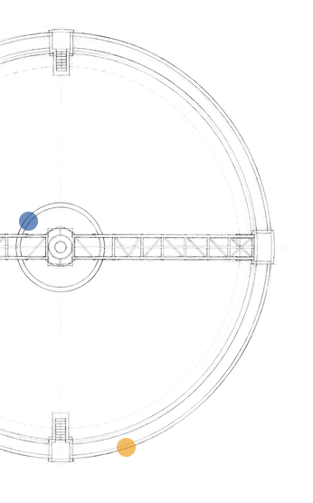
Bureau d’études indépendant depuis 1979, nous accompagnons les collectivités et acteurs privés
dans leurs projets d’aménagement urbain, d’environnement, d’eau et d’assainissement.
Présents à l’échelle nationale, nous concevons des solutions adaptées aux projets les plus complexes.

Notre expertise aux services de tous vos projets !
Nous façonnons durablement les territoires, en apportant une expertise technique
sur les infrastructures, les réseaux, les espaces publics et les enjeux environnementaux.


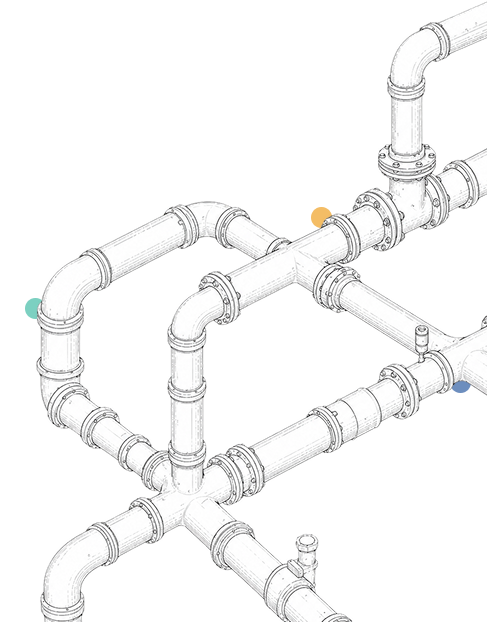
De la définition du besoin à la mise en œuvre
Experts des problématiques de l’eau, nous accompagnons les maîtres d’ouvrage dans la définition, la conception et le suivi de leurs projets,
en apportant des solutions adaptées aux enjeux techniques, environnementaux et réglementaires.
-

Études
- Études de faisabilité
- Diagnostics & schémas directeurs
- Études hydrauliques et environnementales
- Dossiers réglementaires
-

Maîtrise d’œuvre
- Expertise
- Conception : EP/AP/PRO
- Réalisation : ACT/VISA/DET/AOR
- Réception des travaux
-
Assistance à maîtrise d’œuvre
- Aide à la décision
- Suivi administratif
- Coordination des parties prenantes
- Appui technique et réglementaire
Un bureau d’études indépendant
et ancré dans les territoires
La qualité, la rigueur et le respect de l’environnement font partie intégrante de notre façon de travailler. Nos certifications ISO 9001, ISO 14001 et nos qualifications OPQIBI témoignent de notre engagement à fournir des prestations fiables, structurées et adaptées aux exigences de chaque projet.


Elles garantissent à nos clients un accompagnement sérieux, une organisation maîtrisée et une démarche responsable, de l’étude à la réalisation.
Découvrir Socama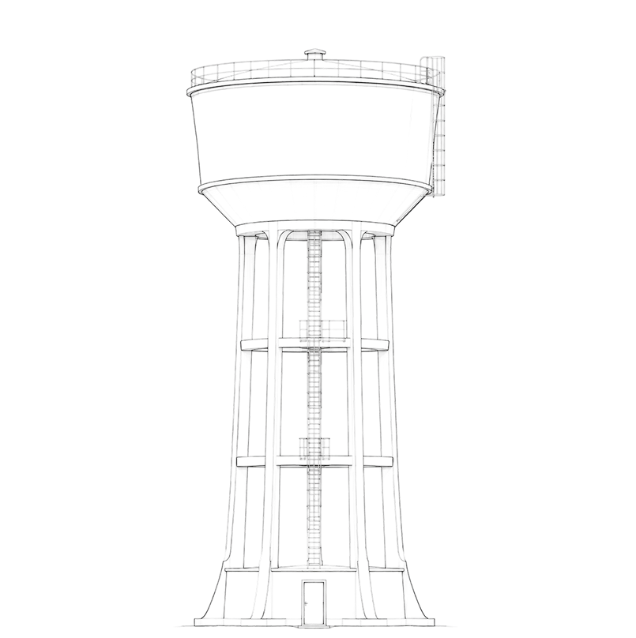
- 60ans D’expertise
- 14 Agences
- 500+ Clients
- 80+ Collaborateurs
Ils nous font confiance
Focus sur nos réalisations


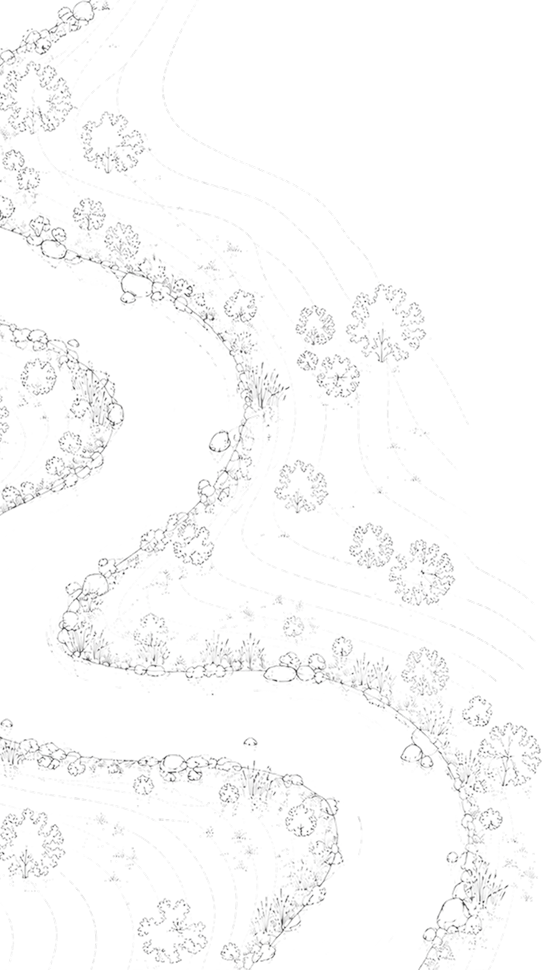
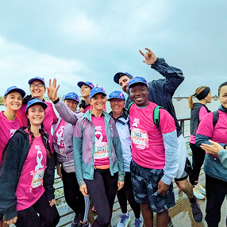
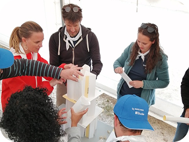
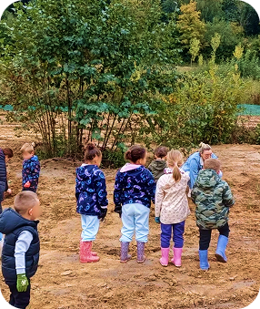
Une démarche RSE engagée au quotidien
Chez SOCAMA Ingénierie, notre démarche RSE repose sur des engagements concrets en matière de qualité, d’environnement et de responsabilité sociétale.
Nos certifications ISO 9001 et ISO 14001 témoignent de notre volonté d’amélioration continue et de maîtrise de notre impact environnemental.
Cette démarche se traduit dans nos projets comme dans notre fonctionnement interne : gestion durable de l’eau, préservation des milieux naturels, réduction du papier, valorisation des déchets, développement des compétences et bien-être au travail.
Rejoignez
une équipe engagée pour les
territoires de demain
Chez SOCAMA Ingénierie, nous recherchons des profils engagés, curieux et rigoureux, prêts à contribuer à des missions variées dans les domaines de l’eau, de l’environnement et de l’aménagement des territoires.
Rejoindre notre équipe, c’est participer à des projets techniques à fort impact, évoluer dans une structure à taille humaine et collaborer avec des professionnels investis. Que vous soyez expérimenté, jeune diplômé ou en recherche d’une nouvelle opportunité, nous sommes attentifs aux talents qui partagent notre vision.
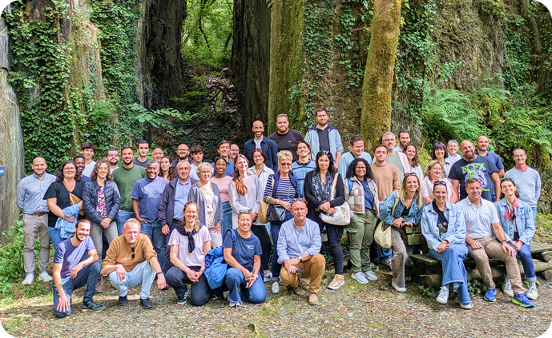
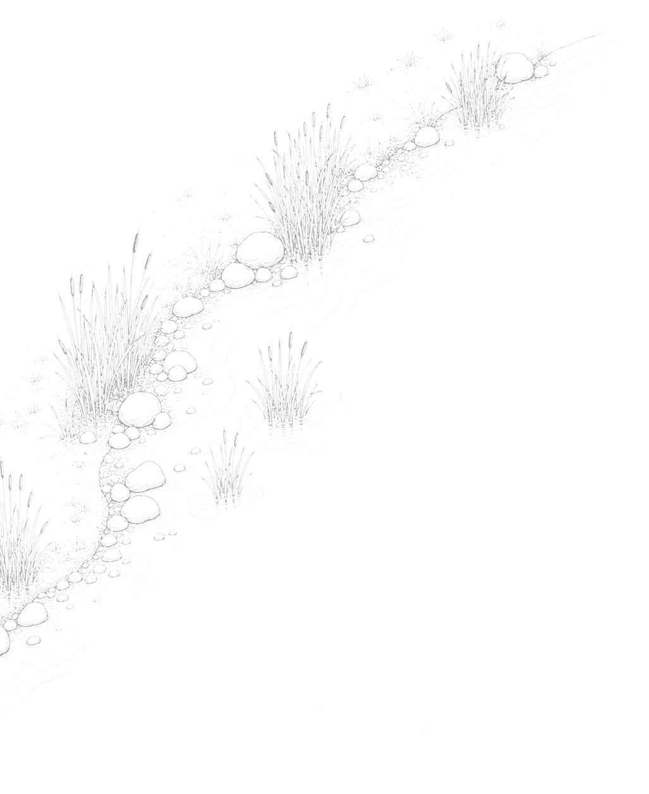
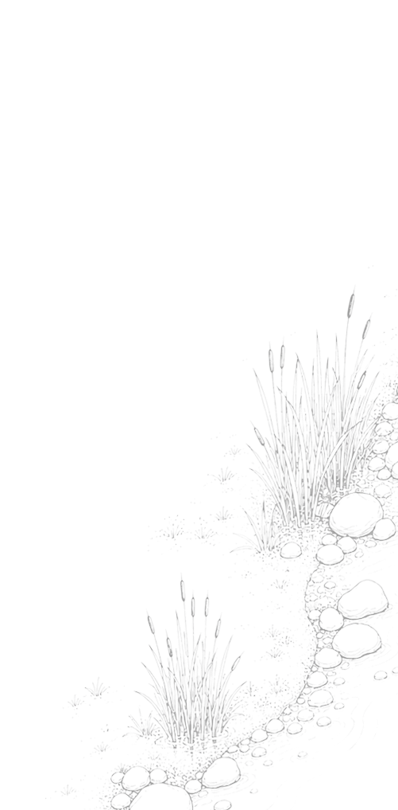
Nos métiers au fil de l’eau !
-
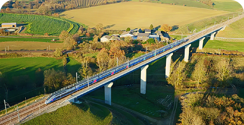
Mesurer pour mieux maîtriser l’impact environnemental des projets
État initial, suivi de chantier, contrôle après travaux : observer le milieu à chaque étape, c’est la meilleure façon de limiter l’empreinte d’un projet.
-

Analyse des milieux et génie écologique
Comprendre un cours d’eau ou une zone humide avant d’agir, puis travailler avec le vivant : c’est le principe du génie écologique.
-

Littoral et estuaires : s’adapter à la montée du niveau de la mer
Le niveau de la mer monte de plus en plus vite. Sur l’estuaire de la Gironde, les ouvrages hydrauliques sont en première ligne.